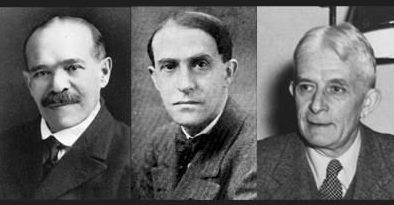
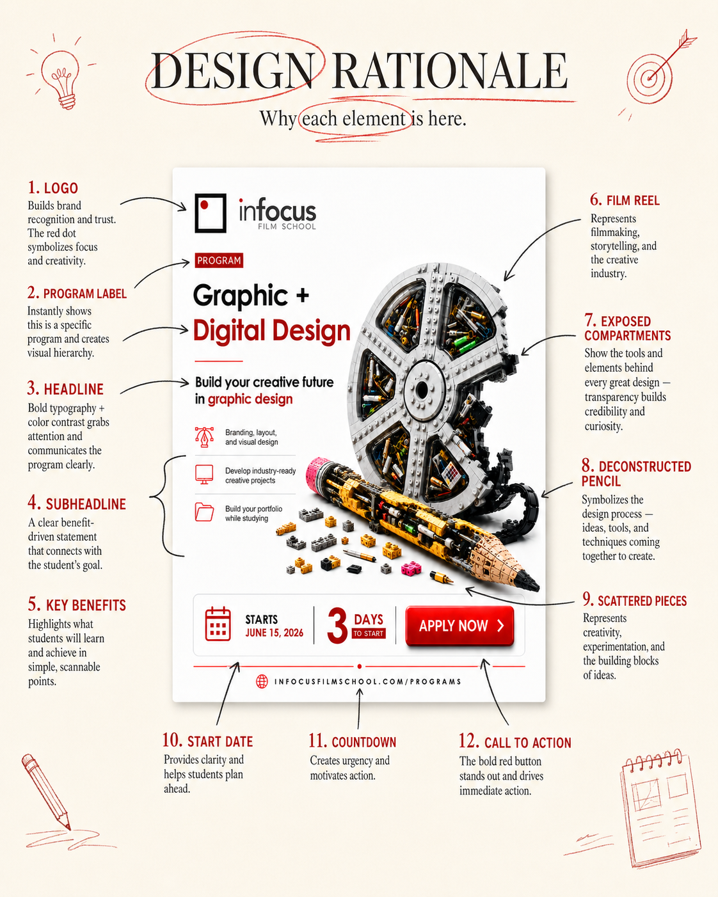
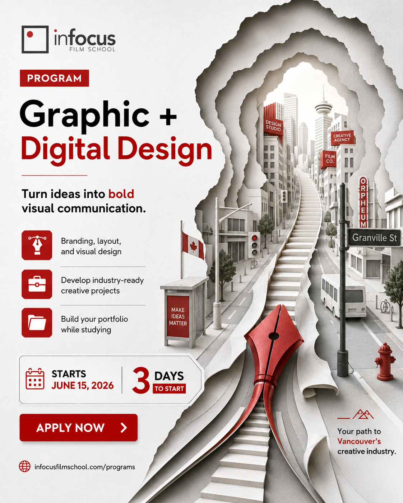

Proximity
Elements placed close together read as a single group before the eye registers what they are.
A scroll stopping ad concept built around film, design tools, and the idea of building a creative future.
The final concept combines a LEGO built film reel and incomplete pencil to represent the process of learning, making, assembling, and refining creative skills. Transparent reel compartments reveal design tools inside, turning the ad into a visual metaphor for hands on creative education.
Design principle, Gestalt's Law of Closure: the reel and pencil are left visibly unfinished on purpose. The eye and mind fill in the missing pieces, turning the viewer into an active participant in the idea of building a creative future.

02 The Theory Behind It
Gestalt psychology is a school of perception built on one premise: the brain processes whole patterns and configurations before it processes isolated pieces. That single idea, more than any trend or trick, is what decides whether the reel and pencil read as one finished thought or a pile of unrelated props.

Elements placed close together read as a single group before the eye registers what they are.
Shapes, colors, or textures that repeat are perceived as related, even across distance.
The brain completes a shape from partial edges, the principle behind the ad's unfinished reel and pencil.
The eye separates a subject from its backdrop, deciding what is the focal point and what is context.
The eye follows the smoothest path, tracking aligned edges as one flow instead of fragments.
03 Design Rationale
Six deliberate decisions turn a single static image into a complete argument for the program.

The film reel anchors the concept in InFocus Film School's identity, connecting the ad directly to storytelling, production, and visual culture.
The LEGO inspired structure represents the way creative skills are assembled through practice, experimentation, and craft.
Transparent compartments reveal pencils, markers, rulers, swatches, and design tools, suggesting that the program is hands on and process driven.
The unfinished pencil shows that design is not instant polish. It is built, revised, tested, and improved.
Loose parts on the ground reinforce the idea of exploration, trial, error, and creative freedom.
The red Apply Now button creates urgency and directs attention toward the next step.
A process wall that behaves like a creative case study: scan the contact sheet, jump between experiments, and watch the idea tighten from rough object tests into the final ad.
Idea snapshot
The visuals are shorthand for three core philosophies: LEGO for active construction, pencil for craft and iteration, and film roll for cinematic storytelling. This idea uses Gestalt theory, especially closure, so the viewer completes the story mentally.
LEGO represents structure and active assembly. The ad is meant to feel like a built system, where each piece points to a larger whole and the mind fills in the missing connections.
The pencil represents the practice of sketching, refining, and making decisions by hand. It is a reminder that good design arrives through iteration, not by accident.
The film roll brings narrative and motion into the concept. It underlines that the final ad is a story frame, informed by cinematic thinking and visual rhythm.
Artifact 01 / 22
Exploration05 Before / After Concept Shift
It started with paper: a hand cut, folded illustration of a path into Vancouver's creative industry. From that starting idea, the concept moved away from illustration and decorative styling and toward a single metaphor: building a creative future through design tools, film culture, and hands on making.

06 Final Ad Breakdown
Twelve deliberate decisions, mapped directly onto the final layout. Select a marker to see the thinking behind it.
Tip: click any numbered marker on the ad to read the reasoning behind it.
07 Downloads
The final deliverable and its editable source, ready to download directly.
The full editable Photoshop file with every layer, group, and smart object used to build the ad.
Open PSD08 About the Designer
Roman Jahandideh is a graphic designer and visual storyteller based in Vancouver, combining brand design, motion, 3D visualization, and interactive media. His work focuses on visual hierarchy, concept driven communication, and building memorable digital and print assets.
09 Contact